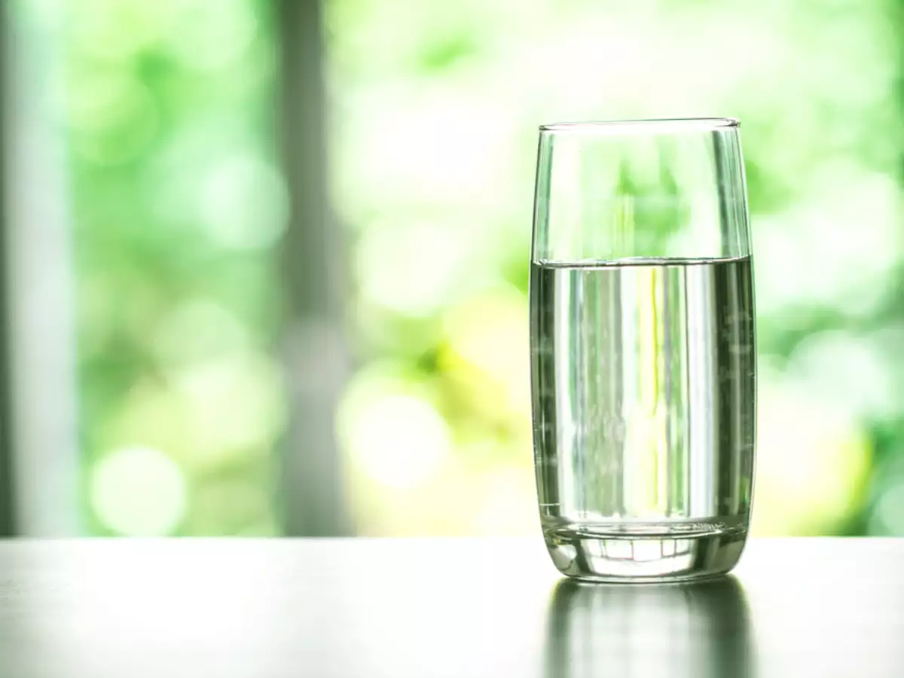

Tap Water

Ready to serve delicious tap water
Ingredients
Directions
- Take a glass and put it under a tap.
- Turn the tap on.
- Let the glass get filled with the water that is coming out of the tap.
- Turn off the tap.
- Enjoy your exotic glass of tap water.